【原创】Linux PCI驱动框架分析（一）
背景
Read the fucking source code!--By 鲁迅A picture is worth a thousand words.--By 高尔基
说明：
- Kernel版本：4.14
- ARM64处理器
- 使用工具：Source Insight 3.5， Visio
1. 概述
从本文开始，将会针对PCIe专题来展开，涉及的内容包括：
- PCI/PCIe总线硬件；
- Linux PCI驱动核心框架；
- Linux PCI Host控制器驱动；
不排除会包含PCIe外设驱动模块，一切随缘。
作为专题的第一篇，当然会先从硬件总线入手。 进入主题前，先讲点背景知识。 在PC时代，随着处理器的发展，经历了几代I/O总线的发展，解决的问题都是CPU主频提升与外部设备访问速度的问题：
- 第一代总线包含
ISA、EISA、VESA和Micro Channel等； - 第二代总线包含
PCI、AGP、PCI-X等； - 第三代总线包含
PCIe、mPCIe、m.2等；
PCIe（PCI Express）是目前PC和嵌入式系统中最常用的高速总线，PCIe在PCI的基础上发展而来，在软件上PCIe与PCI是后向兼容的，PCI的系统软件可以用在PCIe系统中。
本文会分两部分展开，先介绍PCI总线，然后再介绍PCIe总线，方便在理解上的过渡，开始旅程吧。
2. PCI Local Bus
2.1 PCI总线组成
PCI总线（Peripheral Component Interconnect，外部设备互联），由Intel公司提出，其主要功能是连接外部设备；PCI Local Bus，PCI局部总线，局部总线技术是PC体系结构发展的一次变革，是在ISA总线和CPU总线之间增加的一级总线或管理层，可将一些高速外设，如图形卡、硬盘控制器等从ISA总线上卸下，而通过局部总线直接挂接在CPU总线上，使之与高速CPU总线相匹配。PCI总线，指的就是PCI Local Bus。
先来看一下PCI Local Bus的系统架构图：
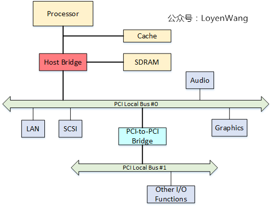
从图中看，与PCI总线相关的模块包括：
Host Bridge，比如PC中常见的North Bridge（北桥）； 图中处理器、Cache、内存子系统通过Host Bridge连接到PCI上，Host Bridge管理PCI总线域，是联系处理器和PCI设备的桥梁，完成处理器与PCI设备间的数据交换。其中数据交换，包含处理器访问PCI设备的地址空间和PCI设备使用DMA机制访问主存储器，在PCI设备用DMA访问存储器时，会存在Cache一致性问题，这个也是Host Bridge设计时需要考虑的； 此外，Host Bridge还可选的支持仲裁机制，热插拔等；PCI Local Bus； PCI总线，由Host Bridge或者PCI-to-PCI Bridge管理，用来连接各类设备，比如声卡、网卡、IDE接口等。可以通过PCI-to-PCI Bridge来扩展PCI总线，并构成多级总线的总线树，比如图中的PCI Local Bus #0和PCI Local Bus #1两条PCI总线就构成一颗总线树，同属一个总线域；PCI-To-PCI Bridge；PCI桥，用于扩展PCI总线，使采用PCI总线进行大规模系统互联成为可能，管理下游总线，并转发上下游总线之间的事务；PCI Device； PCI总线中有三类设备：PCI从设备，PCI主设备，桥设备。 PCI从设备：被动接收来自Host Bridge或者其他PCI设备的读写请求； PCI主设备：可以通过总线仲裁获得PCI总线的使用权，主动向其他PCI设备或主存储器发起读写请求； 桥设备：管理下游的PCI总线，并转发上下游总线之间的总线事务，包括PCI桥、PCI-to-ISA桥、PCI-to-Cardbus桥等。
2.2 PCI总线信号定义
PCI总线是一条共享总线，可以挂接多个PCI设备，PCI设备通过一系列信号与PCI总线相连，包括：地址/数据信号、接口控制信号、仲裁信号、中断信号等。如下图：
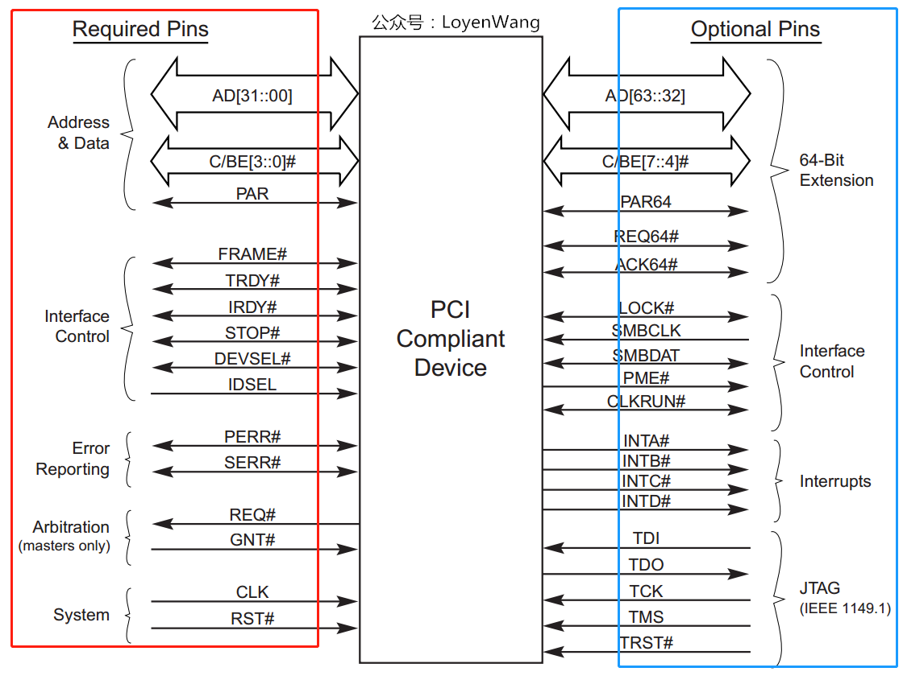
- 左侧红色框里表示的是PCI总线必需的信号，而右侧蓝色框里表示的是可选的信号；
AD[31:00]：地址与数据信号复用，在传送时第一个时钟周期传送地址，下一个时钟周期传送数据；C/BE[3:0]#：PCI总线命令与字节使能信号复用，在地址周期中表示的是PCI总线命令，在数据周期中用于字节选择，可以进行单字节、字、双字访问；PAR：奇偶校验信号，确保AD[31:00]和C/BE[3:0]#传递的正确性；Interface Control：接口控制信号，主要作用是保证数据的正常传递，并根据PCI主从设备的状态，暂停、终止或者正常完成总线事务：FRAME#：表示PCI总线事务的开始与结束；IRDY#：信号由PCI主设备驱动，信号有效时表示PCI主设备数据已经ready；TRDY#：信号由目标设备驱动，信号有效时表示目标设备数据已经ready；STOP#：目标设备请求主设备停止当前总线事务；DEVSEL#：PCI总线的目标设备已经准备好；IDSEL：PCI总线在配置读写总线事务时，使用该信号选择PCI目标设备；
Arbitration：仲裁信号，由REQ#和GNT#组成，与PCI总线的仲裁器直接相连，只有PCI主设备需要使用该组信号，每条PCI总线上都有一个总线仲裁器；Error Reporting：错误信号，包括PERR#奇偶校验错误和SERR系统错误；System：系统信号，包括时钟信号和复位信号；
看一下C/BE[3:0]都有哪些命令吧：
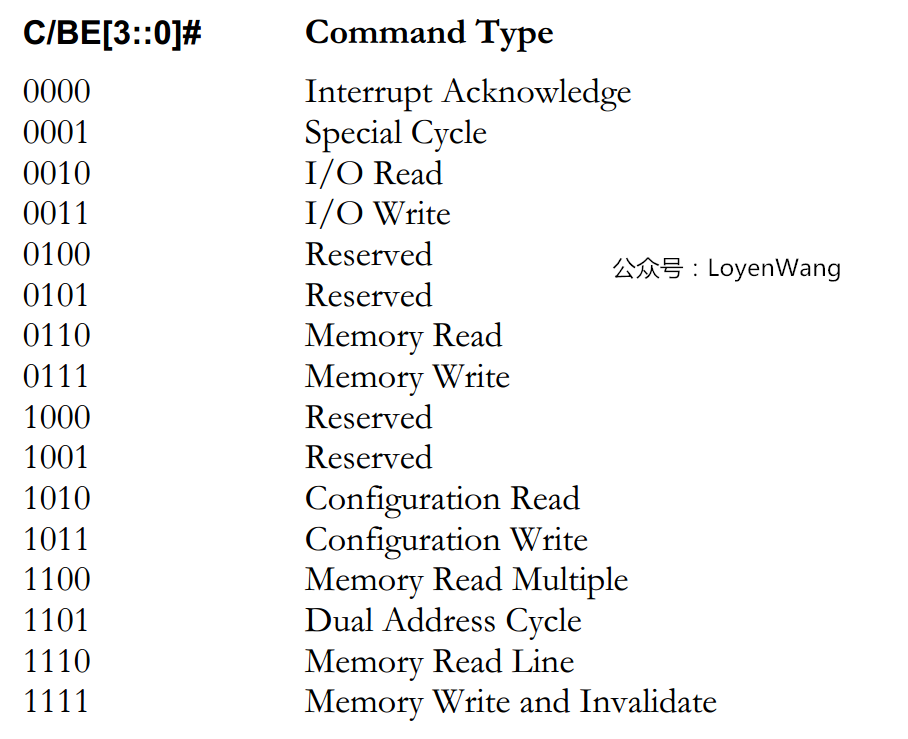
2.3 PCI事务模型
PCI使用三种模型用于数据的传输：
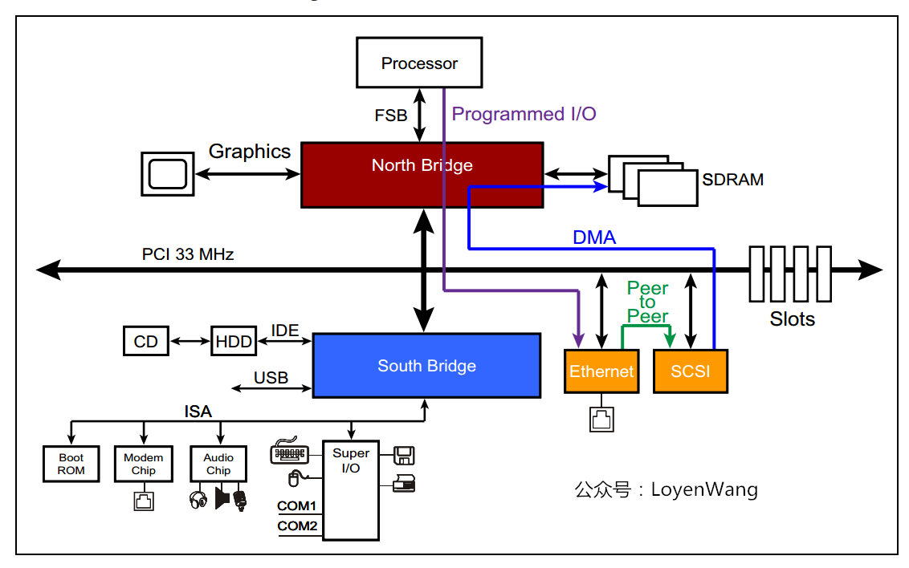
Programmed I/O：通过IO读写访问PCI设备空间；DMA：PIO的方式比较低效，DMA的方式可以直接去访问主存储器而无需CPU干预，效率更高；Peer-to-peer：两台PCI设备之间直接传送数据；
2.4 PCI总线地址空间映射
PCI体系架构支持三种地址空间：
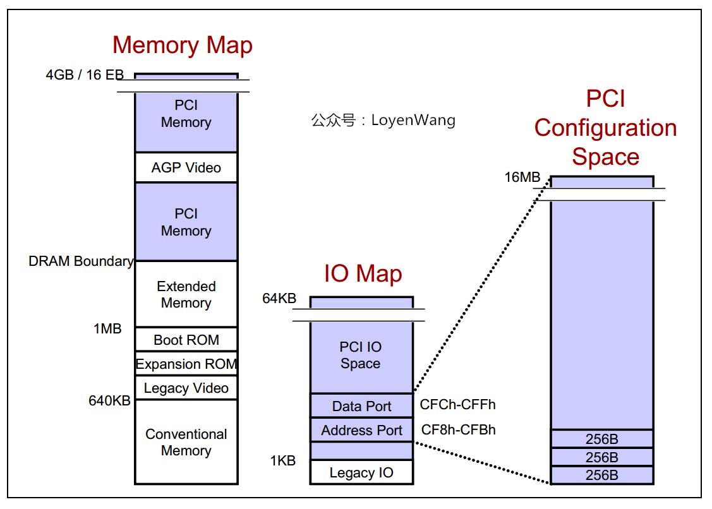
memory空间： 针对32bit寻址，支持4G的地址空间，针对64bit寻址，支持16EB的地址空间；I/O空间PCI最大支持4G的IO空间，但受限于x86处理器的IO空间（16bits带宽），很多平台将PCI的IO地址空间限定在64KB；配置空间x86 CPU可以直接访问memory空间和I/O空间，而配置空间则不能直接访问； 每个PCI功能最多可以有256字节的配置空间； PCI总线在进行配置的时候，采用ID译码方式，使用设备的ID号，包括Bus Number，Device Number，Function Number和Register Number，每个系统支持256条总线，每条总线支持32个设备，每个设备支持8个功能，由于每个功能最多有256字节的配置空间，因此总的配置空间大小为：256B * 8 * 32 * 256 = 16M；有必要再进一步介绍一下配置空间： x86 CPU无法直接访问配置空间，通过IO映射的数据端口和地址端口间接访问PCI的配置空间，其中地址端口映射到
0CF8h - 0CFBh，数据端口映射到0CFCh - 0CFFh； 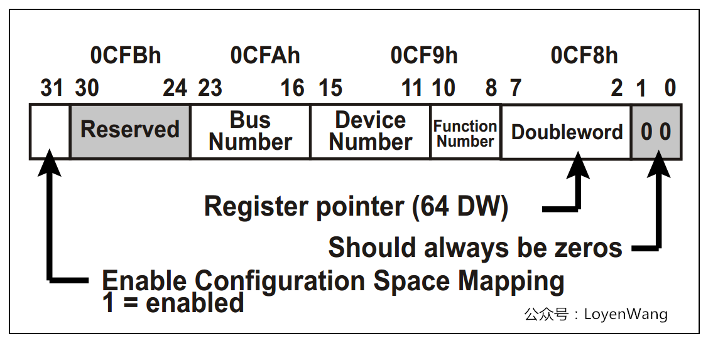- 图为配置地址寄存器构成，PCI的配置过程分为两步：
- CPU写CF8h端口，其中写的内容如图所示，BUS，Device，Function能标识出特定的设备功能，Doubleword来指定配置空间的具体某个寄存器；
- CPU可以IO读写CFCh端口，用于读取步骤1中的指定寄存器内容，或者写入指定寄存器内容。这个过程有点类似于通过I2C去配置外接芯片；
那具体的配置空间寄存器都是什么样的呢？每个功能256Byte，前边64Byte是Header，剩余的192Byte支持可选功能。有种类型的PCI功能：Bridge和Device，两者的Header都不一样。
Bridge 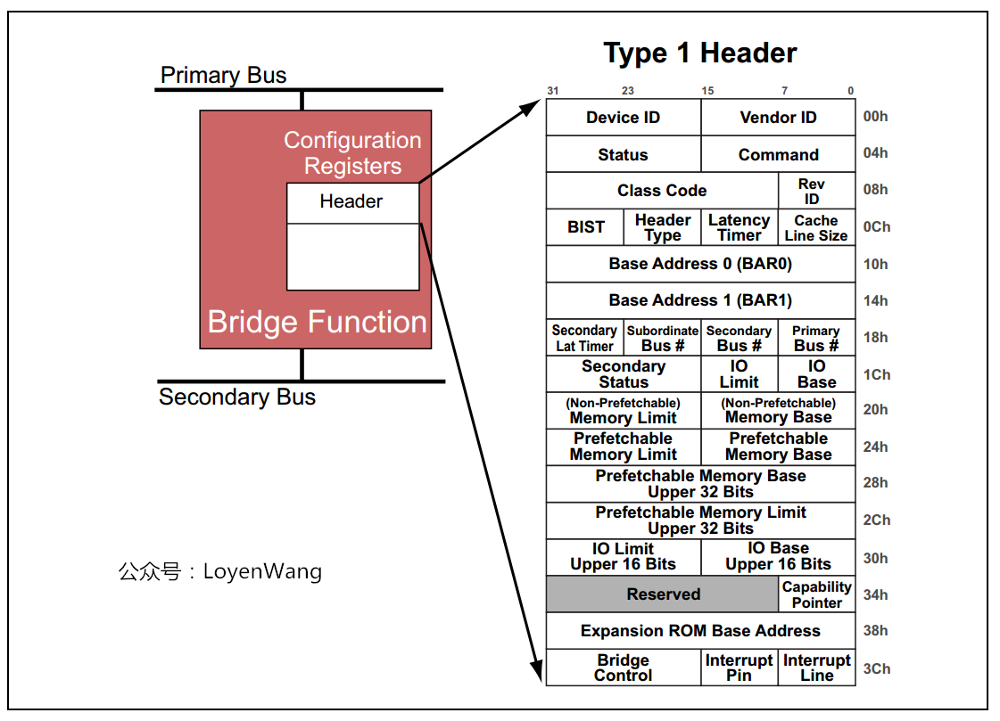
Device 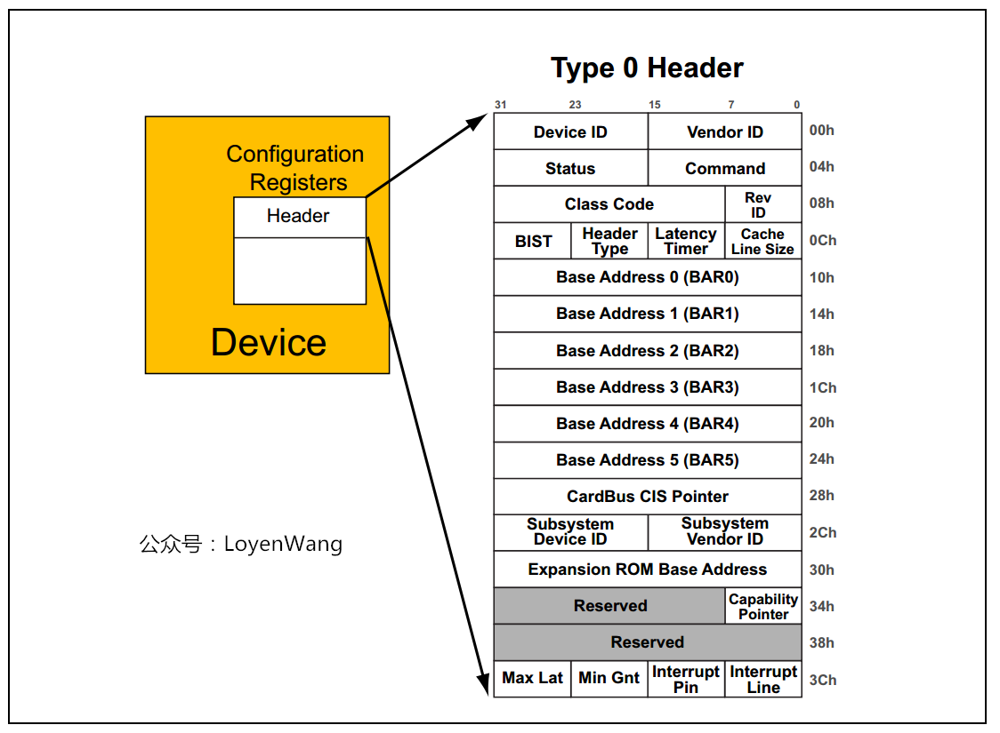
- 图为配置地址寄存器构成，PCI的配置过程分为两步：
配置空间中有个寄存器字段需要说明一下：Base Address Register，也就是BAR空间，当PCI设备的配置空间被初始化后，该设备在PCI总线上就会拥有一个独立的PCI总线地址空间，这个空间就是BAR空间，BAR空间可以存放IO地址空间，也可以存放存储器地址空间。
- PCI总线取得了很大的成功，但随着CPU的主频不断提高，PCI总线的带宽也捉襟见肘。此外，它本身存在一些架构上的缺陷，面临一系列挑战，包括带宽、流量控制、数据传送质量等；
- PCIe应运而生，能有效解决这些问题，所以PCIe才是我们的主角；
3. PCI Express
3.1 PCIe体系结构
先看一下PCIe架构的组成图： 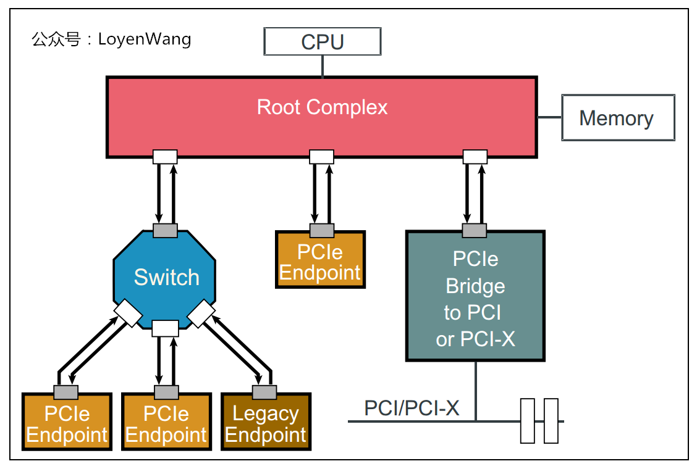
Root Complex：CPU和PCIe总线之间的接口可能会包含几个模块（处理器接口、DRAM接口等），甚至可能还会包含芯片，这个集合就称为Root Complex，它作为PCIe架构的根，代表CPU与系统其它部分进行交互。广义来说，Root Complex可以认为是CPU和PCIe拓扑之间的接口，Root Complex会将CPU的request转换成PCIe的4种不同的请求（Configuration、Memory、I/O、Message）；Switch：从图中可以看出，Swtich提供扇出能力，让更多的PCIe设备连接在PCIe端口上；Bridge：桥接设备，用于去连接其他的总线，比如PCI总线或PCI-X总线，甚至另外的PCIe总线；PCIe Endpoint：PCIe设备；- 图中白色的小方块代表
Downstream端口，灰色的小方块代表Upstream端口；
前文提到过，PCIe在软件上保持了后向兼容性，那么在PCIe的设计上，需要考虑在PCI总线上的软件视角，比如Root Complex的实现可能就如下图所示，从而看起来与PCI总线相差无异：
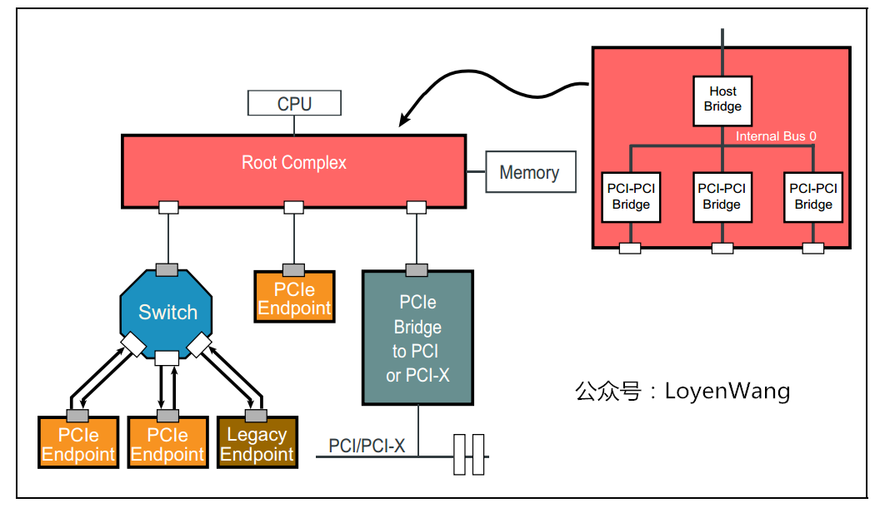
- Root Complex通常会实现一个内部总线结构和多个桥，从而扇出到多个端口上；
- Root Complex的内部实现不需要遵循标准，因此都是厂家specific的；
而Switch的实现可能如下图所示：
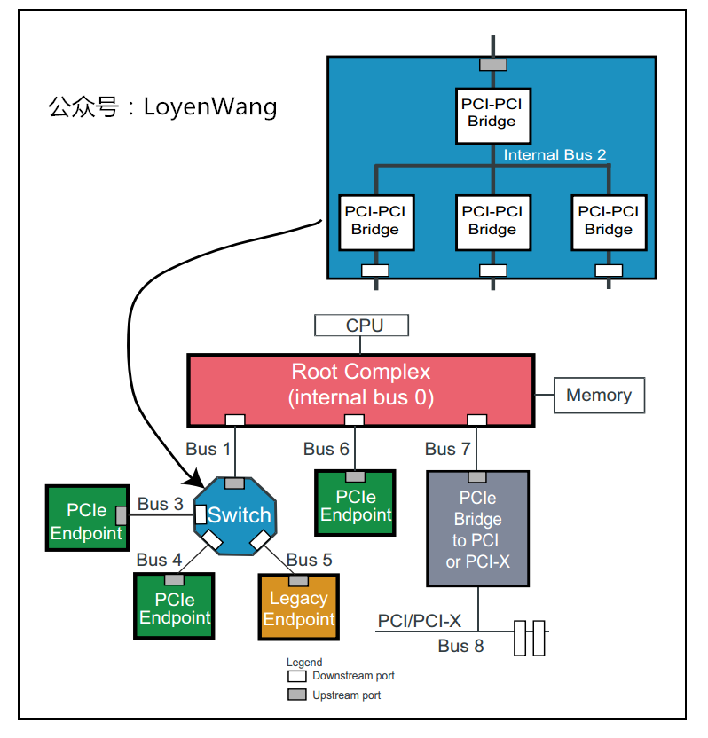
- Switch就是一个扩展设备，所以看起来像是各种桥的连接路由；
3.2 PCIe数据传输
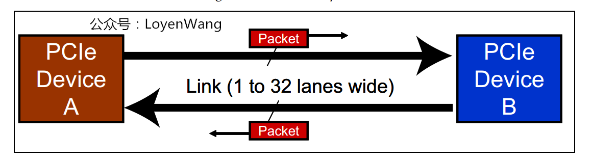
- 与PCI总线不同（PCI设备共享总线），PCIe总线使用端到端的连接方式，互为接收端和发送端，全双工，基于数据包的传输；
- 物理底层采用差分信号（PCI链路采用并行总线，而PCIe链路采用串行总线），一条Lane中有两组差分信号，共四根信号线，而PCIe Link可以由多条Lane组成，可以支持1、2、4、8、12、16、32条；
PCIe规范定义了分层的架构设计，包含三层：
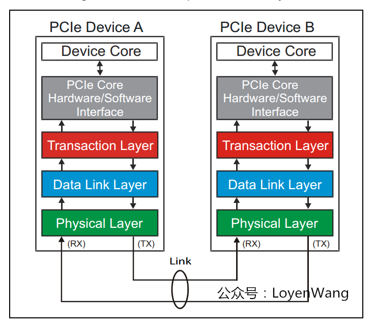
Transaction层
- 负责TLP包（
Transaction Layer Packet）的封装与解封装，此外还负责QoS，流控、排序等功能；
- 负责TLP包（
Data Link层
- 负责DLLP包（
Data Link Layer Packet）的封装与解封装，此外还负责链接错误检测和校正，使用Ack/Nak协议来确保传输可靠；
- 负责DLLP包（
Physical层
- 负责
Ordered-Set包的封装与解封装，物理层处理TLPs、DLLPs、Ordered-Set三种类型的包传输；
- 负责
数据包的封装与解封装，与网络包的创建与解析很类似，如下图：
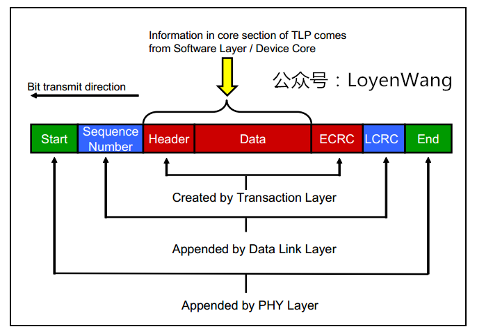
- 封装的时候，在Payload数据前添加各种包头，解析时是一个逆向的过程；
来一个更详细的PCIe分层图：
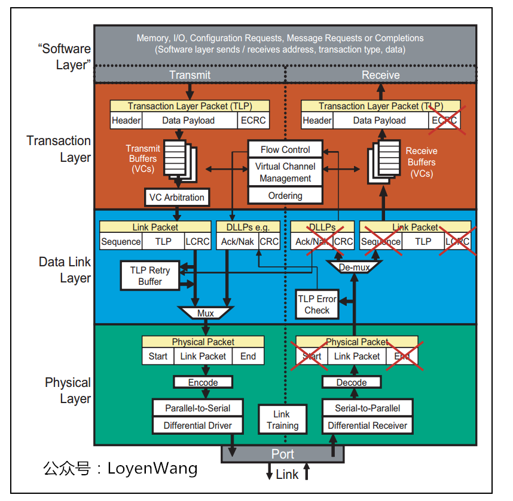
3.3 PCIe设备的配置空间
为了兼容PCI软件，PCIe保留了256Byte的配置空间，如下图：
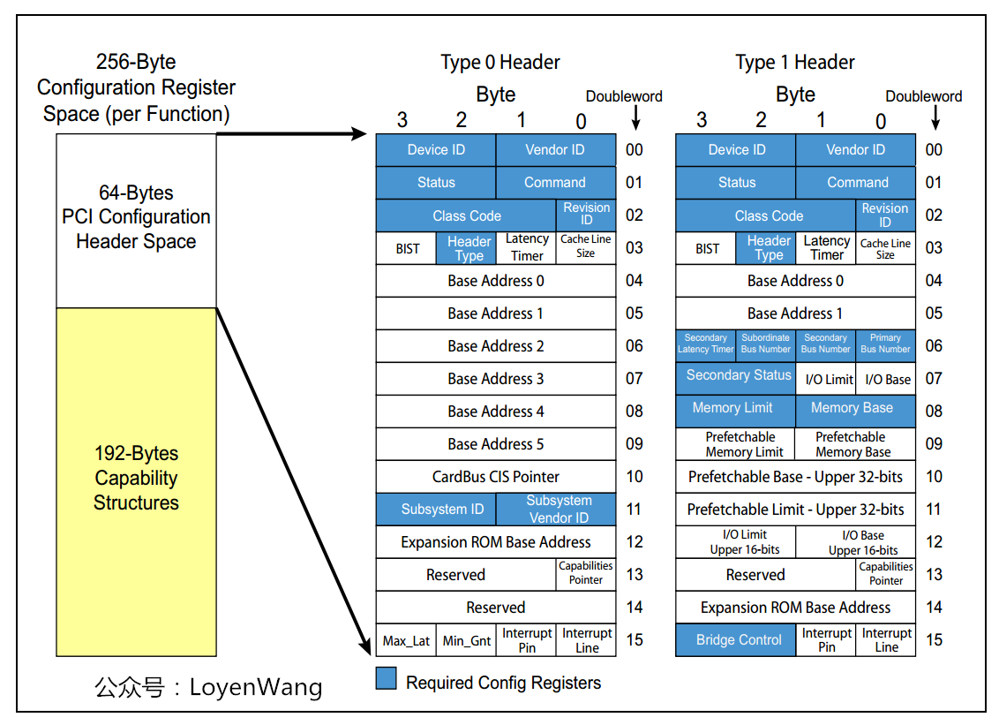
此外，在这个基础上将配置空间扩展到了4KB，还进行了功能的扩展，比如Capability、Power Management、MSI中断等：
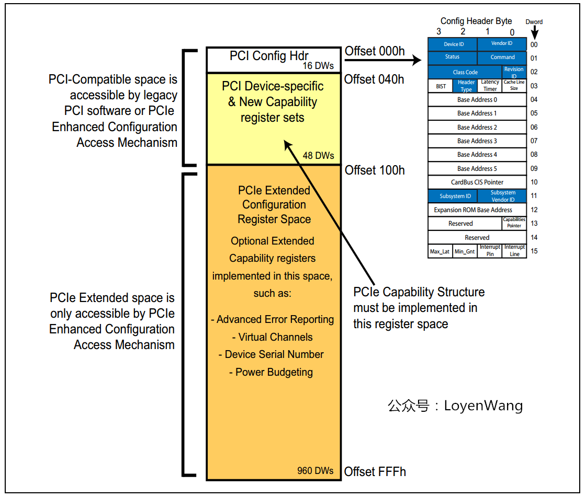
- 扩展后的区域将使用MMIO的方式进行访问；
草草收场吧，对PCI和PCIe有一些轮廓上的认知了，可以开始Source Code的软件分析了，欲知详情、下回分解！
参考
《PCI Express Technology 3.0》
《pci local bus specification revision 3.0》
《PCIe体系结构导读》
《PCI Express系统体系结构标准教材》
欢迎关注个人公众号，不定期分享Linux内核相关技术文章：
出处：https://www.cnblogs.com/LoyenWang/
公众号：LoyenWang
版权：本文版权归作者和博客园共有
转载：欢迎转载，但未经作者同意，必须保留此段声明；必须在文章中给出原文连接；否则必究法律责任

退出 订阅评论
[Ctrl+Enter快捷键提交]
· 现代图片性能优化及体验优化指南
· 探索：优雅地实现异步方法的并行执行
· 如何避免让线程摸鱼，请用异步技术 async await 拿捏他
· 分布式事务 | 使用 DTM 的 Saga 模式
· SQLSERVER 阻塞之 PFS 页到底是什么？
· ChatGPT：让程序开发更轻松
· 从零开始，打造属于你的 ChatGPT 机器人！
· .Net Core对于`RabbitMQ`封装分布式事件总线
· ChatGPT：好家伙，每个人内心的一块魔镜
· 实现一个简单的在浏览器运行Dotnet编辑器